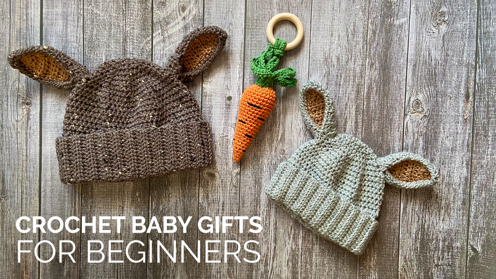

Crochet Baby Gifts for Beginners
Crochet Baby Gifts
Crochet Baby Gifts for Beginners is a delightful introduction to creating handmade treasures for little ones. This allows you to craft soft, adorable, and functional items perfect for babies, such as blankets, booties, hats, or toys. With easy-to-follow instructions and beginner-friendly patterns, it’s the perfect way to showcase your creativity and thoughtfulness while learning new crochet techniques.
Each creation becomes a unique and heartfelt gift, ideal for baby showers, birthdays, or just to pamper the little bundle of joy. Plus, the satisfaction of making something with your own hands makes these gifts even more special!
Featured Sulky Products:
- Pattern Instructions
- Yarn
- Tapestry Needle
- Crochet Hook
- Stitch Markers
- Scissors
- Measuring Tape
Step-by-Step For Making Crochet Baby Gifts for Beginners
1.Choose Your Pattern and Materials: Select a simple pattern like a baby blanket or a pair of booties. Gather all materials listed above and ensure you have the recommended yarn weight and hook size for your pattern.
2.Learn Basic Crochet Stitches: Familiarize yourself with beginner stitches like chain (ch), single crochet (sc), and double crochet (dc). These are often used in baby gift patterns.
3.Start with a Foundation Chain: Follow your pattern to make a foundation chain of the required length. This will determine the size of your project.
4.Work in Rows or Rounds: For blankets or hats, you’ll either work back and forth in rows or in a continuous round.
For booties or toys, you may work in parts and sew them together later.
5.Follow the Pattern: Carefully read the instructions for each row or round, keeping track of stitch counts and ensuring your work stays even. Use stitch markers to mark the start of rounds or important sections.
6.Check Your Progress: Measure your project as you go to ensure it matches the dimensions in the pattern. Adjust tension if necessary.
7.Add Finishing Touches: For booties or hats, attach decorative elements like pom-poms or buttons (ensure they’re baby-safe).
For blankets, you can add an edging using a contrasting yarn color for extra charm.
8.Weave in Loose Ends: Use a tapestry needle to weave in all yarn tails neatly. This prevents unraveling and gives your project a polished look.
9.Wash and Block (Optional): For a softer finish, gently hand-wash your completed project using baby-safe detergent. Lay it flat to dry and shape it to the correct size.

Share tips, start a discussion, or ask one of our experts or other students a question.